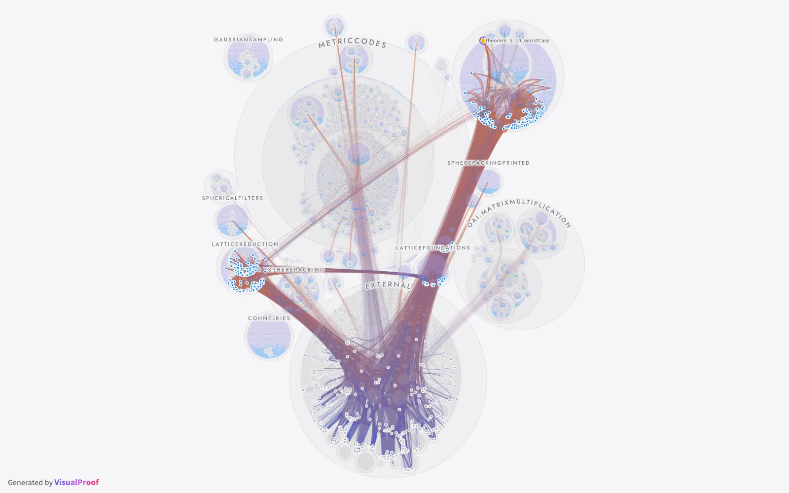

Superlattice methods for SVP and DGS
Lit: what theorem_5_10_worstCase rests on
Lean 4 certificate, in progress, for the manuscript “Superlattice methods for the shortest vector problem and discrete Gaussian sampling” (Hhan, Kim, Kim, Laarhoven): the cited results it relies on, its lemmas, and Theorem 5.10 for every lattice.
Built
formalization @ a5576c1Lean v4.36.021 Nov 2026